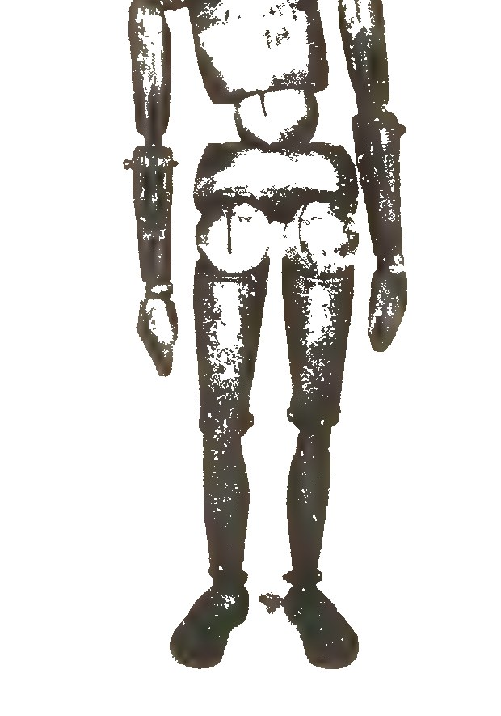
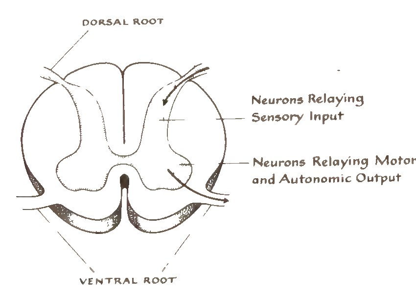

Chương 1 — Barney (42 Tuổi): Tháp Pisa Nghiêng
Barney, một giám đốc bảo hiểm, ở độ tuổi bốn mươi. Suốt vài năm, anh cảm thấy cơn đau mạn tính ở phía bên phải. Thêm vào đó, anh thường xuyên mất thăng bằng và vấp ngã. Khi bác sĩ của anh nghe anh than phiền, bà ấy cho chụp X quang, nhưng không thấy dị dạng rõ ràng. Bà kết luận rằng 42 năm sung sức của sự hao mòn đã gây ra sự thoái hóa viêm khớp của khớp hông. Bà nói với Barney—người cao lớn—rằng anh bị viêm khớp, điển hình của quá trình lão hóa, và anh phải học cách chung sống với nó. Bà kê aspirin và cho nghỉ ngơi trên giường vào những ngày cơn đau dữ dội.
Không hài lòng với cách điều trị này, Barney đã đến gặp một bác sĩ chỉnh hình, người nói với anh rằng các xương ở phần dưới cột sống của anh bị lệch khỏi vị trí và cần được chỉnh lại. Anh ta chỉnh cột sống cho Barney, nhưng hông vẫn tiếp tục đau. Barney sau đó đến gặp một thầy châm cứu, người xác định kinh mạch nào bị liên quan và châm kim vào đúng chỗ. Điều đó làm dịu cơn đau của Barney, nhưng bốn ngày sau nó lại trở lại.
Vì vậy, với tiền sử này—rất điển hình—Barney đã đến gặp tôi. Anh đã nghe nói tôi làm một việc bất thường gọi là "giáo dục somatic", mà không ai hiểu rõ lắm, nhưng dù sao cũng được cho là rất thành công.
Sau khi nghe câu chuyện của anh, tôi muốn xác định vị trí cơn đau. Barney chỉ vào phía sau xương chậu bên phải, vùng nằm giữa khớp hông và xương cùng. Tôi sờ vùng đó. Đường đau nằm ở cơ mông trung (gluteus medius), cơ kéo dài ngang qua mông từ đầu đùi đến điểm giữa phía sau của xương chậu. Đó là cơ mà chúng ta thường co lại khi đứng bằng một chân. Nó giữ chân áp vào xương chậu để duy trì sự ổn định khi chúng ta nghiêng người sang một bên. Khớp hông của Barney không đau khi chạm vào cũng như khi vận động. Chính cơ mông trung là chỗ bị đau nhức.
Tôi báo cho Barney biết rằng anh không bị viêm khớp, mà có một cơ bị làm việc quá sức một cách đau đớn, đau nhức vì co liên tục. "Tại sao bác sĩ lại nói tôi bị viêm khớp?" anh hỏi. Tôi nói với anh rằng tôi không biết. Tôi biết rằng X quang không cho thấy mô cơ, dù đau hay không. Và tôi biết rằng các bác sĩ thường nói với những bệnh nhân đang chịu cơn đau mạn tính và không thể chữa khỏi bằng y học rằng họ bị viêm khớp và không có gì có thể làm được. Huyền thoại cổ xưa về lão hóa được ăn sâu chắc chắn trong y học hiện đại.
Giờ đây, khi đã biết chính xác vị trí cơn đau của Barney, tôi yêu cầu anh đứng ngay trước mặt tôi, nhắm mắt lại. Toàn bộ thân mình của Barney nghiêng gần 15 độ sang phía phải. Vì phần lớn trọng lượng của anh vì thế luôn nằm ở phía bên phải, cơ mông trung của anh luôn ở trạng thái co.
Khi Barney đứng đó, tôi sờ cơ mông trung bên trái của anh. Nó mềm và không co. Rồi tôi sờ cơ đó ở phía bên phải. Nó cứng và đang co. Khi tôi sờ các cơ ở lưng anh, chúng cũng tương tự: các cơ bên trái tương đối mềm và thư giãn, trong khi các cơ lưng bên phải thì căng—đặc biệt là những cơ gần cột sống. Các cơ ở phía bên phải của Barney bị co mạn tính, kéo anh vào một đường cong vẹo cột sống, khiến trọng lượng tăng thêm của thân mình làm cơ mông trung bên phải phải co liên tục—do đó gây ra cơn đau và mệt mỏi mạn tính trong cơ.
Barney không thể tự ý nới lỏng các cơ ở phía bên phải của lưng. Chúng đơn giản là không đáp ứng. Tôi bảo Barney đứng trước một chiếc gương toàn thân, để anh có thể thấy độ nghiêng 15 độ của mình. Anh đã không hề hay biết là mình bị nghiêng. Nhưng anh nhớ bác sĩ đã nói với anh rằng chân phải của anh ngắn hơn chân trái. Chúng tôi đo hai chân, và chúng dài bằng nhau. Tôi yêu cầu Barney đứng thẳng người rồi nhắm mắt lại. "Cảm thấy thế nào?" tôi hỏi. "Anh có thấy cân bằng không?" "Không," anh nói. "Tôi thấy mình nghiêng sang trái." Ngay khi anh thả lỏng, thân mình lập tức nghiêng trở lại sang phải. Rồi tôi bảo anh nghiêng xa về phía trái với mắt nhắm và sau đó trở về vị trí mà anh cảm thấy là thẳng đứng. Không chút do dự, anh lập tức trở lại với độ nghiêng 15 độ sang phải. "Giờ tôi thẳng rồi," anh nói. Nhưng trông anh như Tháp Pisa.
Không chỉ nhận thức của Barney về các cơ phía bên phải bị khiếm khuyết, mà nhận thức của anh về vị trí của cơ thể trong không gian cũng vậy. Cảm giác thăng bằng của anh bị méo mó. Một thời, hồi còn trẻ, Barney đã có sự kiểm soát vận động bình thường đối với các cơ ở cả hai bên. Các giác quan của anh đã từng nhận biết được các cơ của mình đang làm gì để thay đổi tư thế của cơ thể trong không gian. Nhưng từ đó anh đã mất cả sự kiểm soát vận động lẫn nhận biết cảm giác. Điều mà anh từng làm, giờ anh không còn làm được. Điều mà anh từng cảm nhận, giờ anh không còn cảm nhận được. Đó là tác động điển hình của chứng quên cảm giác–vận động.

Hình 1: Tư Thế Của Barney
Tôi hỏi Barney xem anh đã từng bị chấn thương nghiêm trọng nào chưa. Anh nói có, năm năm trước anh đã gãy đùi trái trong một tai nạn ô tô. Tại thời điểm đó, tôi biết tại sao anh bắt đầu nghiêng sang phía phải: Sau khi gãy chân, người ta thường nghiêng cơ thể sang phía bên kia, dồn trọng lượng lên chân
không bị thương. Trong những tuần dài hồi phục, sự nghiêng sang phải của Barney đã trở thành thói quen và hoàn toàn vô ý thức. Một tai nạn chấn thương đã gây ra chứng quên cảm giác–vận động.
Một khi Barney được hướng dẫn cách cảm nhận các cử động cơ bắp của mình như anh đã từng làm, và một khi anh học lại được cách kiểm soát các cơ của mình, ba điều đã xảy ra: (1) Anh không còn đau ở xương chậu, dù bị "viêm khớp" của tuổi già; (2) giờ anh đứng thẳng, với trọng lượng cân bằng đều trên mỗi chân và các cơ thân mình cân bằng trái phải; và (3) cảm giác thăng bằng của anh được phục hồi, để anh biết khi nào mình thẳng đứng và khi nào mình bị nghiêng. Anh không còn tư thế chênh vênh đã khiến anh vấp ngã liên tục.
Tóm lại, Barney không còn chứng quên cảm giác–vận động. Tốt hơn nữa, giờ anh có được kiến thức vui vẻ về cách ngăn ngừa việc này tái diễn. Anh giờ đã tự duy trì được, không cần sự giúp đỡ của tôi, cũng như của bất kỳ chuyên gia y tế nào khác, để kiểm soát vấn đề này.
Đoạn Xen: Vận Động Và Cảm Nhận—Hai Mặt Của Cùng Một Đồng Xu
Khi Barney lần đầu đến với tôi, anh không thể kiểm soát đúng cách các cơ của thân mình và xương chậu—đó là một khiếm khuyết vận động—và không thể cảm nhận đúng cách những gì các cơ đó đang làm với cơ thể anh—đó là một khiếm khuyết cảm giác. Cả hai vấn đề đều liên quan đến hệ thần kinh trung ương, tức là não và tủy sống, hệ thống tổng thể điều khiển cơ thể.
Khi nhìn vào hệ thần kinh trung ương, chúng ta thấy khía cạnh căn bản nhất của nó là nó có, cả về cấu trúc lẫn chức năng, hai bộ phận: bộ phận cảm giác và bộ phận vận động. Từ não xuống dọc cột sống đến xương cụt, các dây thần kinh cảm giác thoát ra từ phía sau cột sống và các dây thần kinh vận động thoát ra từ phía trước (xem Hình 2).
Rễ sau (Dorsal root).
Các tế bào thần kinh truyền tín hiệu cảm giác đầu vào.
Các tế bào thần kinh truyền tín hiệu vận động và tự chủ đầu ra.
Rễ trước (Ventral root).

Hình 2: Đường Truyền Cảm Giác Và Vận Động Trong Tủy Sống
Mọi thứ chúng ta cảm nhận được ở thế giới bên ngoài cơ thể và mọi thứ chúng ta cảm nhận được bên trong cơ thể đều đi vào não của chúng ta qua các dây thần kinh cảm giác. Mọi việc chúng ta làm trên thế giới và mọi cử động chúng ta thực hiện đều chảy ra từ não xuống cột sống qua các dây thần kinh vận động. Các dây thần kinh cảm giác kiểm soát nhận thức của chúng ta về thế giới và về chính mình. Các dây thần kinh vận động kiểm soát các cử động của chúng ta trên thế giới và bên trong mình thông qua sự gắn kết với các cơ của bộ xương và các cơ trơn của nội tạng.
Hai bộ phận căn bản này của tủy sống vươn lên vào não: Các tế bào thần kinh cảm giác tiếp tục đến phía sau rãnh trung tâm của não, và các tế bào thần kinh vận động tiếp tục đến phía trước của não (xem Hình 3).
Trung tâm khởi phát các thông điệp đi ra.
Thị giác.
Vùng liên hợp.
Vùng liên hợp thính giác.
Vùng ngôn ngữ vận động (chỉ ở bên trái).
Trung tâm tiếp nhận thông tin đầu vào.

Hình 3: Đường Truyền Cảm Giác Và Vận Động Trong Vỏ Não
Sự phân chia cấu trúc này được tích hợp về mặt chức năng trong một hệ thống thần kinh duy nhất: Chức năng cảm giác và vận động là hai mặt của cùng một đồng xu. Ở cột sống chúng ta thấy sự tách biệt của hai hệ thống, nhưng ở não chúng ta thấy sự tích hợp của chúng.
Các dây thần kinh cảm giác mang đến não thông tin về những gì đang xảy ra trên thế giới cũng như trong cơ thể chúng ta. Được cung cấp thông tin này, não có thể tính toán cần làm gì và làm thế nào: tức là, não tích hợp thông tin cảm giác đầu vào với các mệnh lệnh gửi ra cho hệ thống vận động. Những chức năng tích hợp của hệ thống cảm giác và vận động này căn bản và quen thuộc đến mức, cũng như con cá không nhận ra nước, chúng ta không nhận ra sự hoạt động không ngừng của chúng.
Chúng ta hiếm khi nhận thức được hai chức năng tích hợp này khi làm một việc đơn giản như lật trang sách. Khi một người đến cuối trang, bàn tay trái của người đó nhấc lên, đi sang phải, tìm thấy mép của trang tiếp theo ở góc phải của cuốn sách, và lật sang trái. Nhưng để bàn tay trái "tìm thấy mép của trang tiếp theo" đòi hỏi thông tin cảm giác chính xác về vị trí của bàn tay và vị trí của cuốn sách. Khi bàn tay trái của bạn nhấc lên, nó phải biết nó đang đi đâu, nếu không nó có thể nhấc lên và rơi xuống bên sườn bạn, hoặc đập vào mũi bạn, hoặc vươn qua và chạm vào vai phải của bạn. May mắn thay, nó không làm vậy. Bạn biết bàn tay và cuốn sách của mình ở đâu, vì trong từng khoảnh khắc bạn di chuyển bàn tay, bạn đang nhận một dòng thông tin cảm giác liên tục về vị trí, hướng, đường nét, quỹ đạo, và tốc độ của cử động bàn tay liên quan đến vị trí được cảm nhận của mép trang tiếp theo ở góc phải của cuốn sách.
Trong khoa học thần kinh sinh lý đương đại, sự tương tác liên tục giữa thông tin cảm giác và sự dẫn dắt vận động được gọi là một "hệ thống phản hồi" hoạt động theo các "vòng lặp": Các dây thần kinh cảm giác "phản hồi" thông tin đến các dây thần kinh vận động, với phản ứng của chúng "quay vòng lại" bằng các mệnh lệnh vận động dọc theo các dây thần kinh vận động. Khi cử động diễn ra, các dây thần kinh vận động lại "phản hồi" thông tin mới cho các dây thần kinh cảm giác về vị trí của bàn tay. Vòng phản hồi này tiếp tục trao đổi thông tin cho đến khi bàn tay và các ngón tay chạm vào trang giấy và lật nó.
Một khi chúng ta suy ngẫm về điều đó, chúng ta thấy rõ rằng mình cần một dòng thông tin cảm giác liên tục từ bên ngoài để duy trì sự kiểm soát liên tục các cử động cơ bắp từ bên trong ra. Chúng ta không thể có ý thức làm bất cứ điều gì trên thế giới này nếu hệ thống cảm giác–vận động của chúng ta không hoạt động liên tục.
Nhận ra hệ thống cảm giác–vận động căn bản rõ ràng đến thế nào đối với cách chúng ta sống khiến chúng ta nhận ra một điều căn bản khác: Nếu có bất cứ điều gì trục trặc với hệ thống cảm giác–vận động, cuộc sống của chúng ta sẽ bị suy giảm tận gốc. Nếu có điều gì đó làm mờ đi nhận thức cảm giác của chúng ta, chúng ta sẽ không biết cách kiểm soát cơ thể và hành động của mình một cách hiệu quả. Nếu có điều gì đó làm chai đi sự kiểm soát vận động của chúng ta, chúng ta không chỉ trở nên bị giới hạn và kém hiệu quả trong hành động, mà sự phản hồi của chúng ta cũng trở nên rối ren và thiếu chính xác. Vì các chức năng cảm giác và vận động được tích hợp thành một hệ thống, bất cứ điều gì trục trặc ở một phần sẽ tự động trục trặc ở phần kia. Cách chúng ta cảm nhận thế giới và cảm nhận về chính mình bị ảnh hưởng không kém cách chúng ta hành động trên thế giới và mức độ hoạt động tốt của cơ thể.
Các rối loạn chức năng của hệ thống cảm giác–vận động là vấn đề nghiêm trọng, và khi chúng xảy ra, chúng gây ra sự suy giảm căn bản trong cuộc sống của chúng ta. Hàng ngàn năm qua, chúng đã bị gắn liền với các chứng rối loạn của lão hóa và vì thế được cho là không thể tránh khỏi và không thể đảo ngược. Nhưng, như chúng ta sẽ thấy, chúng có thể được ngăn ngừa và đảo ngược.